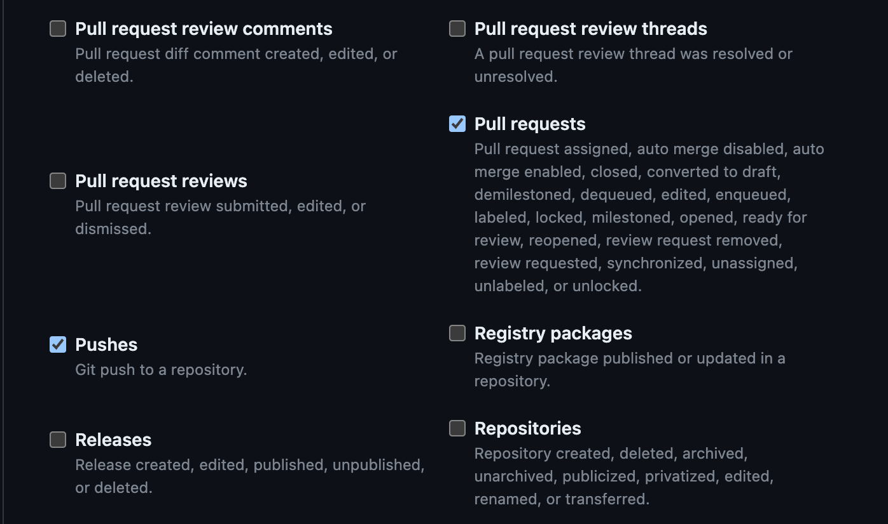
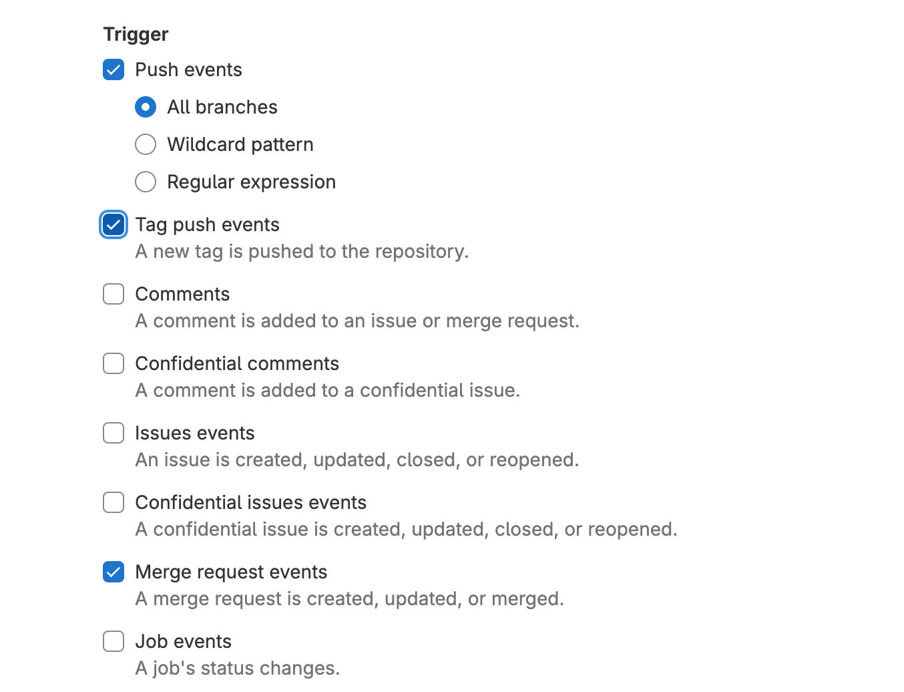
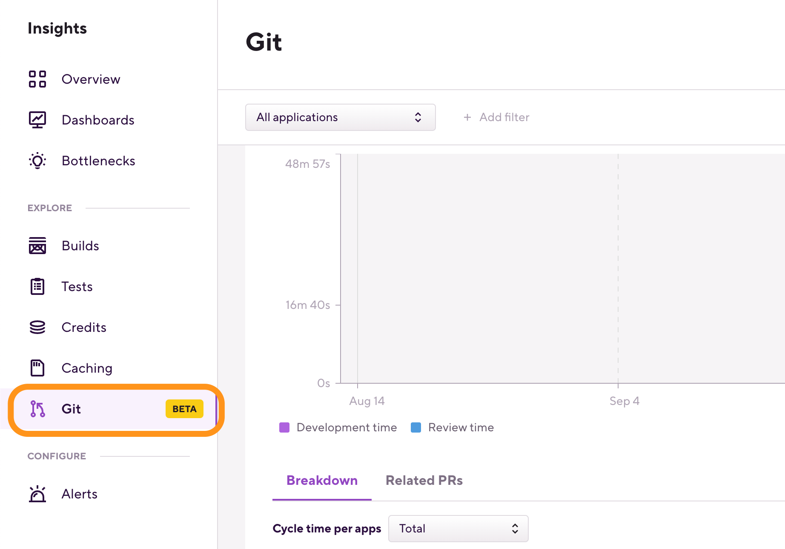

Git Insights
Git Insights enables Bitrise users to quantify and optimize Git collaboration. It provides crucial metrics like pull request cycle time and merge frequency.
Git Insights enables you to quantify and optimize Git collaboration. It provides crucial metrics like pull request cycle time and merge frequency.
Git provider requirements
Git Insights is only available if your repository is hosted on one of three Git providers:
-
GitHub
-
GitLab
-
Bitbucket Cloud. Insights doesn't support self-hosted Bitbucket at the moment.
Configuring webhooks for Git Insights
To use Git Insights, you need to register a webhook with your Git provider. Without a webhook, Bitrise can't access your pull request data.
Updating existing webhooks
If you already have webhooks registered to automatically trigger builds on Bitrise, check that their permissions match the requirements of Git Insights and update them if necessary.
Git Insights requires the following webhook permission from the three supported Git providers:
-
GitHub: Pushes, Pull requests. For more information, see Adding a GitHub webhook.
 -
GitLab: Push events/All branches, Merge request events. For more information, see Adding a GitLab webhook.
 -
Bitbucket: Repository: Push; Pull request: Created, Updated, Merged. For more information, see Adding a Bitbucket webhook.
Accessing Git Insights
To access Git Insights:
-
Log in to Bitrise.
-
Select a Workspace in the top right corner of the Dashboard.
-
On the menubar on the top, select Insights.
-
On the left, select Git.

Using Git Insights
Git Insights can show aggregated metrics for all apps of a Workspace, or metrics for each individual app:
You can also filter for the target branch of the pull requests: once you selected an app, click Add filter next to the app dropdown menu.
Git Insights offers two main metrics for now: cycle time and merge frequency.
Cycle time means the time elapsed between opening a PR and merging it. It is further broken down into two separate metrics:
-
Development time: The time between the first commit of a PR and opening the PR.
-
Review time: The time it takes from opening the PR to the PR being merged into the target branch.
Merge frequency means the number of times a PR has been merged in a given period.
You can see these metrics on the main chart where you can switch between displaying cycle time and merge frequency:
The Breakdown tab allows users to view detailed information for each application or target branch by time period. For example, you can check the total merge frequency for a target branch in any given week over a month:
The content depends on your settings and filters:
-
If you look at the aggregated data of all applications, the Breakdown tab displays data on a per application basis.
-
If you filter the data for a specific application, the Breakdown tab displays data on a per target branch basis.
The Related PRs tab shows relevant metrics for each individual PR that is represented in the dataset. By clicking anywhere in the row, you can go to the PR's page.